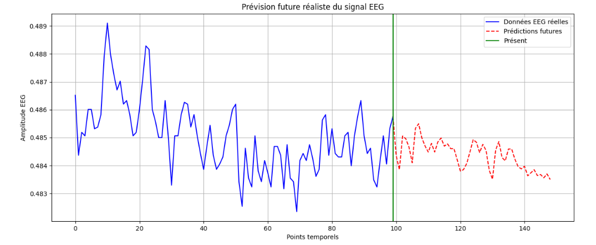
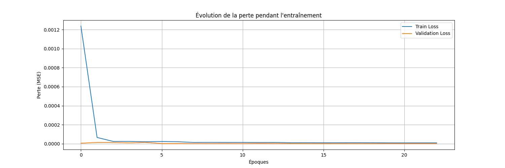

Modèle de Prédiction EMG/EEG Hybride
Cette Partie présente l’implémentation d’un modèle hybride avancé pour la prédiction de signaux EMG/EEG. Le modèle combine des techniques de convolution multi-échelles, des réseaux LSTM bidirectionnels et un système d’extraction de caractéristiques enrichies pour capturer la complexité des signaux biomédicaux.
Architecture du Modèle
Le modèle utilise une architecture hybride composée de trois composants principaux :
Convolutions Multi-échelles : Pour capturer différentes fréquences temporelles
LSTM Bidirectionnel : Pour l’analyse séquentielle des dépendances temporelles
Fusion Multi-modale : Combinaison des signaux bruts et des caractéristiques extraites
{kind=link}
Structure du Code
Extraction de Caractéristiques
La fonction d’extraction de caractéristiques analyse 11 aspects différents du signal :
def extract_features(data, seq_length):
"""
Extraire des caractéristiques avancées du signal EEG/EMG
Analyse 11 aspects du signal :
- Statistiques : moyenne, écart-type, min, max, plage
- Dynamique : gradient moyen, variabilité absolue
- Fréquentielle : fréquence dominante
- Complexité : entropie approximative
- Morphologie : pics, passages à zéro
"""
features = []
# Validation et préparation des données
if len(data.shape) > 1 and data.shape[0] == 1:
data = data.flatten()
if len(data) < seq_length:
if len(data) > 0:
padding = np.zeros(seq_length - len(data))
data = np.concatenate([data, padding])
else:
return np.zeros((0, 11))
# Extraction des caractéristiques par fenêtre glissante
for i in range(len(data) - seq_length + 1):
segment = data[i:i+seq_length]
# Caractéristiques statistiques de base
mean = np.mean(segment)
std = np.std(segment)
min_val = np.min(segment)
max_val = np.max(segment)
range_val = max_val - min_val
# Analyse des tendances et variations
gradient = np.gradient(segment).mean()
abs_gradient = np.abs(np.gradient(segment)).mean()
# Analyse fréquentielle simplifiée
fft_vals = np.abs(np.fft.rfft(segment))
if len(fft_vals) > 1:
dominant_freq_idx = np.argmax(fft_vals[1:]) + 1
dominant_freq_val = fft_vals[dominant_freq_idx] / len(segment)
else:
dominant_freq_val = 0
# Mesure de complexité (entropie approximative)
diffs = np.diff(segment)
direction_changes = np.sum(np.diff(np.signbit(diffs)) != 0)
complexity = direction_changes / max(1, (seq_length - 2))
# Caractéristiques morphologiques
peak_count = len(np.where(np.diff(np.signbit(np.diff(segment))) < 0)[0])
zero_crossings = len(np.where(np.diff(np.signbit(segment)))[0])
# Assemblage du vecteur de caractéristiques
feature_vec = np.array([
mean, std, min_val, max_val, range_val,
gradient, abs_gradient,
dominant_freq_val, complexity,
peak_count / max(1, seq_length),
zero_crossings / max(1, seq_length)
])
features.append(feature_vec)
return np.array(features)
Explication : Cette fonction extrait des caractéristiques multidimensionnelles du signal pour enrichir l’analyse. Elle combine des mesures statistiques classiques avec des indicateurs de complexité et de morphologie du signal.
Création de Séquences Enrichies
def create_enriched_sequences(data, seq_length, pred_length=1, stride=1):
"""
Crée des séquences d'entrée/sortie avec caractéristiques enrichies
Args:
data: Données d'entrée normalisées
seq_length: Longueur des séquences d'entrée
pred_length: Nombre de points à prédire
stride: Pas entre les séquences
"""
X_raw, y = [], []
# Validation de la suffisance des données
if len(data) <= seq_length + pred_length:
return np.array([]), np.array([]), np.array([])
# Création des séquences par fenêtre glissante
for i in range(0, len(data) - seq_length - pred_length + 1, stride):
X_raw.append(data[i:i + seq_length])
if pred_length == 1:
y.append(data[i + seq_length])
else:
y.append(data[i + seq_length:i + seq_length + pred_length])
X_raw = np.array(X_raw)
if len(X_raw) == 0:
return np.array([]), np.array([]), np.array([])
# Extraction des caractéristiques pour chaque séquence
X_features = extract_features(data, seq_length)
# Synchronisation des dimensions
min_samples = min(len(X_raw), len(X_features))
if min_samples == 0:
return np.array([]), np.array([]), np.array([])
X_raw = X_raw[:min_samples]
X_features = X_features[:min_samples]
y = np.array(y)[:min_samples]
return X_raw, X_features, y
Explication : Cette fonction prépare les données d’entraînement en créant des séquences temporelles et en extrayant les caractéristiques correspondantes pour chaque séquence.
Architecture du Modèle Hybride
def create_advanced_emg_model(seq_length, feature_dim, pred_length=1):
"""
Modèle hybride optimisé pour signaux EMG/EEG
Architecture:
- Convolutions multi-échelles pour différentes fréquences
- Convolutions dilatées pour dépendances long terme
- LSTM bidirectionnel pour analyse séquentielle
- Fusion de signaux bruts et caractéristiques extraites
"""
# === DÉFINITION DES ENTRÉES ===
input_seq = Input(shape=(seq_length, 1), name='raw_sequence')
input_features = Input(shape=(feature_dim,), name='extracted_features')
# === PRÉTRAITEMENT ===
x = GaussianNoise(0.005)(input_seq) # Bruit pour généralisation
# === CONVOLUTIONS MULTI-ÉCHELLES ===
conv_kernels = [2, 3, 5, 7]
conv_outputs = []
for kernel_size in conv_kernels:
if kernel_size <= seq_length:
conv = Conv1D(
filters=32,
kernel_size=kernel_size,
padding='same',
activation='elu'
)(x)
conv = LayerNormalization()(conv)
conv_outputs.append(conv)
if not conv_outputs:
raise ValueError(f"Kernel sizes incompatibles avec seq_length={seq_length}")
x = Concatenate()(conv_outputs)
# === CONVOLUTIONS DILATÉES ===
dilation_rates = [1, 2, 4, 8]
dilated_outputs = []
for dilation_rate in dilation_rates:
if (3 - 1) * dilation_rate + 1 <= seq_length:
dilated_conv = Conv1D(
filters=32,
kernel_size=3,
padding='causal',
dilation_rate=dilation_rate,
activation='elu'
)(x)
dilated_outputs.append(dilated_conv)
if not dilated_outputs:
dilated_conv = Conv1D(filters=32, kernel_size=1, activation='elu')(x)
dilated_outputs.append(dilated_conv)
x = Concatenate()(dilated_outputs)
x = Conv1D(64, kernel_size=1, activation='elu')(x)
# === BRANCHE LSTM BIDIRECTIONNELLE ===
lstm_out = Bidirectional(LSTM(64, return_sequences=True))(x)
lstm_out = LayerNormalization()(lstm_out)
lstm_out = Dropout(0.3)(lstm_out)
lstm_out = Bidirectional(LSTM(48, return_sequences=False))(lstm_out)
# === TRAITEMENT DES CARACTÉRISTIQUES ===
features_dense = Dense(32, activation='elu')(input_features)
features_dense = Dense(32, activation='elu')(features_dense)
# === FUSION DES BRANCHES ===
combined = Concatenate()([lstm_out, features_dense])
# === COUCHES DE SORTIE ===
x = Dense(64, activation='elu')(combined)
x = Dropout(0.2)(x)
x = Dense(32, activation='elu')(x)
output = Dense(pred_length)(x)
# === COMPILATION ===
model = Model(inputs=[input_seq, input_features], outputs=output)
optimizer = Adam(learning_rate=0.001, clipnorm=1.0)
model.compile(optimizer=optimizer, loss='mse')
return model
Explication : Le cœur du modèle combine plusieurs approches complémentaires. Les convolutions multi-échelles capturent différentes fréquences du signal, les LSTM analysent les dépendances temporelles, et la fusion permet d’exploiter à la fois les signaux bruts et les caractéristiques extraites.
Prédiction Réaliste Adaptative
def forecast_realistic_emg(model, initial_sequence, steps_ahead=200, scaler=None):
"""
Prévision réaliste avec recalcul adaptatif des caractéristiques
Utilise une approche adaptative pour maintenir la naturalité du signal :
- Recalcul des caractéristiques à chaque étape
- Stabilisation basée sur la volatilité historique
- Ajout de bruit adaptatif pour réalisme
"""
sequence_length = initial_sequence.shape[0]
future_predictions = []
current_sequence = initial_sequence.flatten().copy()
# Analyse de la volatilité historique
if len(current_sequence) < 10:
padding = np.zeros(10 - len(current_sequence))
current_sequence = np.concatenate([current_sequence, padding])
recent_variations = np.diff(current_sequence[-10:])
variation_history = np.abs(recent_variations).mean()
for i in range(steps_ahead):
# Préparation de la séquence courante
if len(current_sequence) < sequence_length:
padding = np.zeros(sequence_length - len(current_sequence))
temp_sequence = np.concatenate([current_sequence, padding])
else:
temp_sequence = current_sequence[-sequence_length:]
# Extraction des caractéristiques actualisées
try:
current_features_array = extract_features(temp_sequence, sequence_length)
if len(current_features_array) == 0:
raise ValueError("Extraction échoué")
current_features = current_features_array[0]
except Exception:
current_features = np.zeros(11)
# Prédiction du point suivant
next_point_scaled = model.predict(
[temp_sequence.reshape(1, sequence_length, 1),
current_features.reshape(1, -1)],
verbose=0
)[0][0]
# === STABILISATION ADAPTATIVE ===
last_point = current_sequence[-1]
max_jump = 2.5 * variation_history
if abs(next_point_scaled - last_point) > max_jump:
direction = np.sign(next_point_scaled - last_point)
next_point_scaled = last_point + direction * max_jump
# === BRUIT ADAPTATIF ===
noise_scale = variation_history * 0.5
if not np.isfinite(noise_scale) or noise_scale == 0:
noise_scale = 0.01
noise = np.random.normal(0, noise_scale)
next_point_with_noise = np.clip(next_point_scaled + noise, 0, 1)
# Mise à jour pour itération suivante
future_predictions.append(next_point_with_noise)
current_sequence = np.append(current_sequence[1:], next_point_with_noise)
# Mise à jour de l'historique de volatilité
if i >= 1:
new_variation = abs(future_predictions[-1] - future_predictions[-2])
variation_history = 0.85 * variation_history + 0.15 * new_variation
future_predictions = np.array(future_predictions)
# Dénormalisation si nécessaire
if scaler is not None:
future_predictions = scaler.inverse_transform(
future_predictions.reshape(-1, 1)
).flatten()
return future_predictions
Explication : Cette fonction implémente une prédiction adaptative qui maintient la cohérence du signal en ajustant dynamiquement les paramètres de stabilisation selon la volatilité observée.
Configuration du Modèle
class EMGModelConfig:
"""Configuration optimisée pour signaux EMG/EEG"""
# Paramètres temporels
SEQUENCE_LENGTH = 30 # Fenêtre d'analyse optimale
PRED_LENGTH = 1 # Prédiction point par point
STRIDE = 1 # Chevauchement maximal
# Paramètres d'entraînement
BATCH_SIZE = 32 # Batch adapté pour stabilité
EPOCHS = 50 # Équilibre apprentissage/surapprentissage
LEARNING_RATE = 0.001 # Avec clippage de gradient
# Paramètres de données
SAMPLE_SIZE = 150000 # Taille d'échantillon recommandée
TRAIN_SPLIT = 0.8 # Répartition entraînement/test
VAL_SPLIT = 0.2 # Validation croisée
Explication : Cette classe centralise tous les hyperparamètres optimisés pour les signaux biomédicaux.
Usage et Implémentation
Exemple d’utilisation complète :
# Import des modules
from emg_model_creation import create_advanced_emg_model, extract_features
from emg_model_creation import create_enriched_sequences, forecast_realistic_emg
from emg_model_creation import EMGModelConfig
# Configuration
config = EMGModelConfig()
# Préparation des données
X_raw, X_features, y = create_enriched_sequences(
data, config.SEQUENCE_LENGTH, config.PRED_LENGTH
)
# Création du modèle
model = create_advanced_emg_model(
seq_length=config.SEQUENCE_LENGTH,
feature_dim=X_features.shape[1]
)
# Entraînement
model.fit(
[X_raw, X_features], y,
batch_size=config.BATCH_SIZE,
epochs=config.EPOCHS,
validation_split=config.VAL_SPLIT
)
# Prédiction future
predictions = forecast_realistic_emg(
model, initial_sequence, steps_ahead=200
)
Des resultats De prediction et d’entrainement tiree a partir d’un exemple
{kind=link}
On observe que les prédictions suivent bien la tendance générale du signal réel, avec un écart relativement faible entre les deux courbes. Les zones grisées mettent en évidence les écarts, qui restent limités, ce qui confirme visuellement la bonne performance du modèle.
 {kind=link}
{kind=link}
{kind=link}
{kind=link}
Le rapport montre que le modèle de prédiction est performant et bien équilibré. Les erreurs (MSE, RMSE, MAE) sont très faibles aussi bien sur les données d’entraînement que de test, ce qui indique une bonne précision. Le coefficient de détermination R² est élevé (0.86 pour l’entraînement et 0.92 pour le test), montrant que le modèle explique bien la variabilité des données. De plus, le ratio MSE entraînement/test est de 2.34, ce qui reste raisonnable et ne signale pas de surapprentissage. Globalement, le modèle semble bien généraliser aux nouvelles données.
Avantages de l’Architecture
Multi-échelle : Capture différentes composantes fréquentielles
Adaptative : Ajustement dynamique selon les caractéristiques du signal
Robuste : Gestion des cas limites et validation des données
Réaliste : Maintien de la cohérence physiologique des prédictions
Optimisations Intégrées
Normalisation par couches pour stabilité d’entraînement
Clippage de gradient pour éviter l’explosion des gradients
Dropout adaptatif pour régularisation
Bruit gaussien pour améliorer la généralisation
Validation continue des dimensions et types de données
Cette architecture représente une approche moderne et robuste pour la prédiction de signaux biomédicaux complexes.